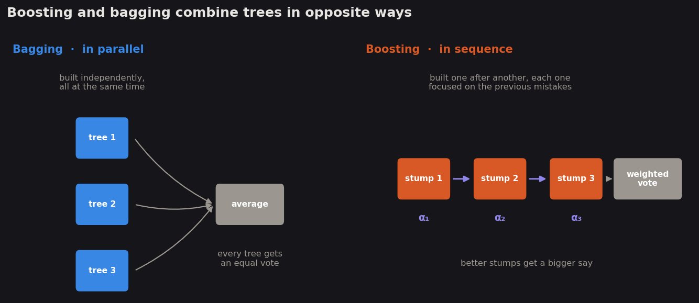
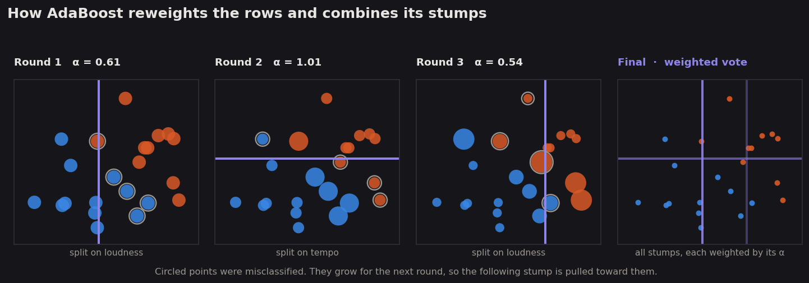
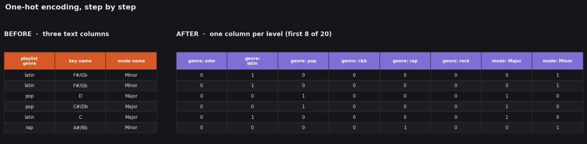
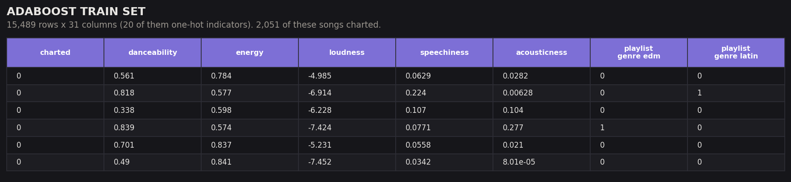
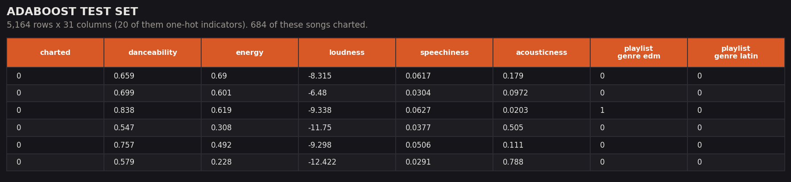
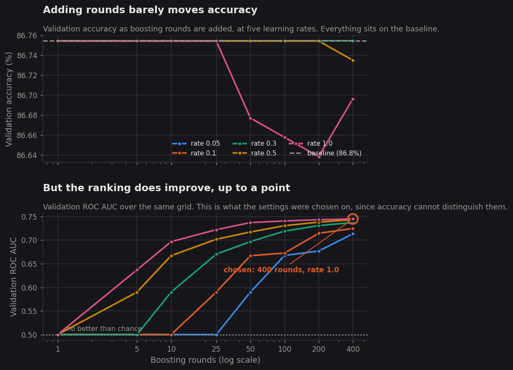
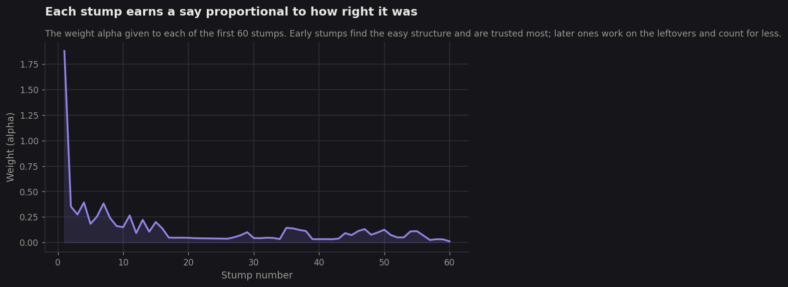
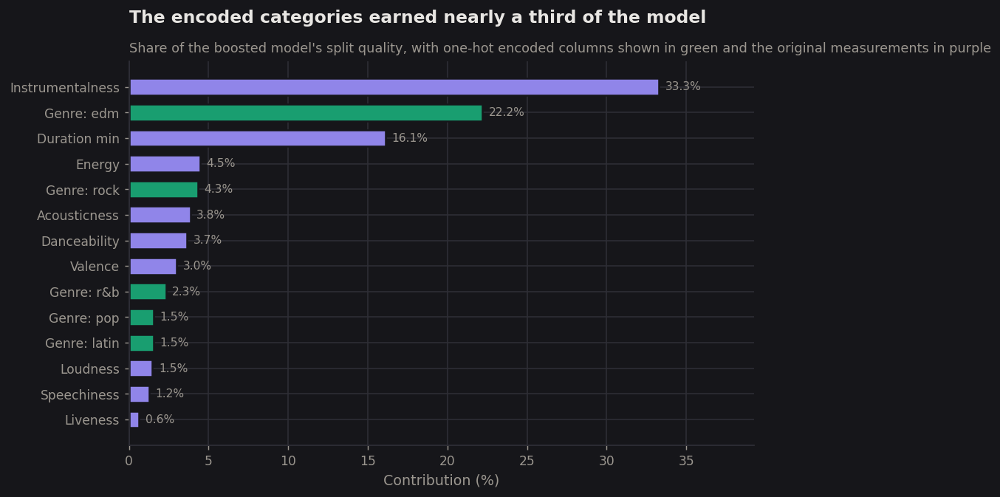
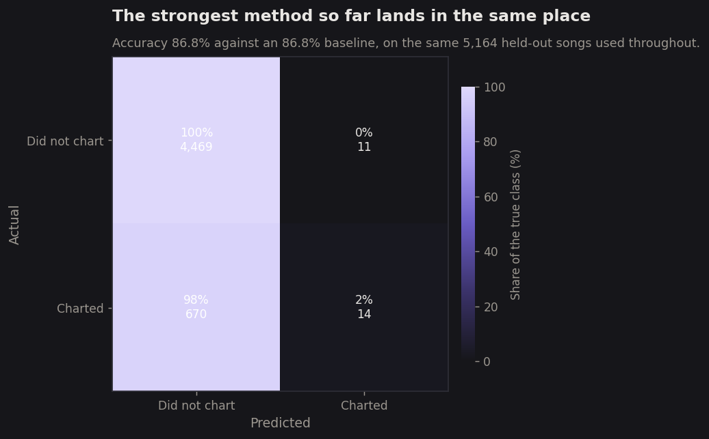
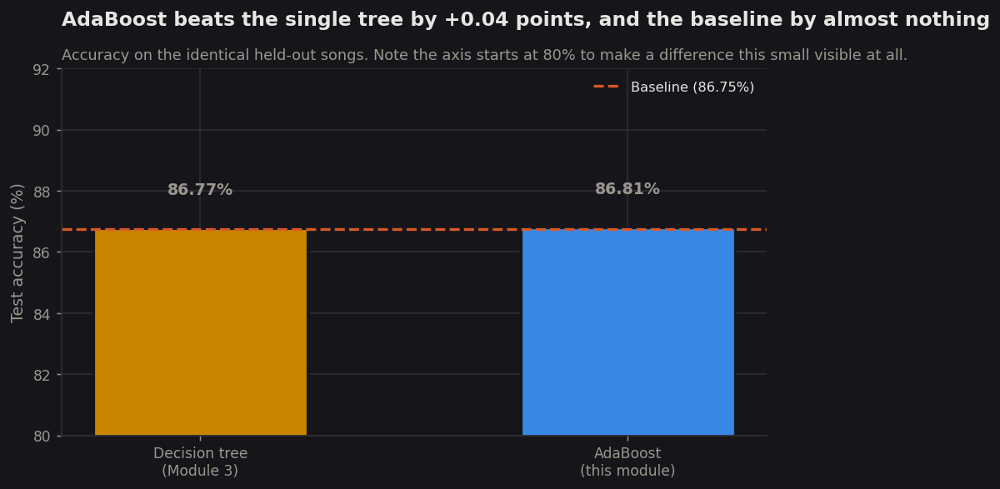

AdaBoost
The previous tab found that a model can rank songs by their chances better than chance, but not confidently enough to act on. Boosting is the natural response: instead of one model trying to get everything right, build hundreds of deliberately weak ones, each sent to work on what the last one missed.
Overview
Boosting is a way of assembling many weak models into one strong one, and its defining feature is that the models are built in sequence, each with knowledge of how its predecessors did. This is the opposite of bagging, the other great ensemble strategy, where many models are trained independently and in parallel on different random samples of the data and then allowed to vote equally. Bagging reduces variance: individual trees are unstable, so averaging a crowd of them smooths out the noise, and random forests are the familiar example. Boosting attacks bias instead. Each new model is fitted specifically to the part of the problem still being got wrong, so the ensemble grows more accurate by accumulating corrections rather than by averaging away noise.

The weak model AdaBoost uses is the decision stump: a decision tree of depth one, which asks a single question about a single variable and gives an answer. A stump is barely a model at all — on a six-class problem one can hardly do better than guessing, and on a two-class problem it might manage 55% where 50% is chance. That weakness is deliberate. Boosting needs its members to be only slightly better than random, because the strength is supposed to come from how they are combined, and a committee of strong models would simply agree with one another and add nothing.
The mechanism that makes the sequence work is reweighting. Every training row starts with equal weight. The first stump is fitted, and the rows it got wrong have their weights increased while the rows it got right have theirs decreased. The second stump is then fitted to that reweighted data, so it is pulled toward exactly the examples the first one fumbled. Repeat a few hundred times and each stump is specialising in the residue left by everything before it. Rows that are easy get quietly ignored after the first few rounds; rows that sit near the boundary keep growing in importance until some stump finally handles them.
Each stump also earns a weight of its own, conventionally called alpha, computed from its
error rate on the weighted data as α = ½ ln((1 − error) / error). A stump
with a low error rate gets a large alpha and a loud voice in the final decision; a stump barely
better than guessing gets an alpha near zero and is effectively ignored. A stump that is
worse than guessing would get a negative alpha, meaning the ensemble learns to do the
opposite of what it says. The final prediction is the sign of the alpha-weighted sum of all
the stumps' votes — not a majority count, but a vote in which the stumps that proved
themselves count for more.

Two settings control the process. n_estimators is how many rounds to run, and learning_rate scales down each stump's contribution, trading more rounds for smaller, more careful steps. Both are tuned on the validation set below, never on the test set.
Data Prep
AdaBoost is supervised, so it needs labelled data and the same disjoint partitions used
throughout: 15,489 training songs, 5,164 validation and 5,164 test, verified
non-overlapping, with the test set matching Module 3's row for row so the comparison at the end is
fair. The target is charted, the same two-class label the decision tree and Naïve
Bayes were given.
What is new here is the feature side. Scikit-learn's implementation requires every input to be numeric, and three genuinely useful columns in the cleaned data are not: a song's genre, its musical key and its mode. These cannot simply be numbered, because assigning pop = 1, rap = 2, rock = 3 would invent an ordering that does not exist and let the model split on "genre ≤ 2" as though that meant something. One-hot encoding avoids this by giving each level its own column holding 1 or 0.
| Column | Levels | Becomes | Example |
|---|---|---|---|
playlist_genre | 6 | 6 indicator columns | playlist_genre_rap = 1, the other five = 0 |
key_name | 12 | 12 indicator columns | key_name_C = 1, the other eleven = 0 |
mode_name | 2 | 2 indicator columns | mode_name_Major = 1, mode_name_Minor = 0 |
The result takes the feature count from 10 numeric columns to 30. Every stump can now ask questions like "is this song EDM?" alongside "is energy above 0.64", which is exactly the kind of single-variable question a depth-one tree is built to handle.



Encoded data
All three partitions with the 30-column encoded feature set.
m4_adaboost_train.csv → m4_adaboost_val.csv → m4_adaboost_test.csv →The encoding step
The same rows before and after, as shown in the figure above.
m4_encoding_before.csv → m4_encoding_after.csv →Code
Python 3 with scikit-learn's AdaBoostClassifier, using an explicit
depth-one DecisionTreeClassifier as the base estimator so the stump is visible in the
code rather than left as a default. Forty configurations were fitted on the training data and
scored on validation; the test set was touched once.
AdaBoost
The tuning grid, the one-hot experiment, the final model, and all five figures.
15_adaboost.py →Results
Eight round counts from 1 to 400 were crossed with five learning rates from 0.05 to 1.0, giving forty configurations, each fitted on the training set and scored on validation. The two panels below show why the choice had to be made on ranking quality rather than accuracy.

The chosen configuration was 400 rounds at a learning rate of 1.0, with a validation AUC of 0.745. The one-hot encoding also earned its place as a measurable experiment rather than a formality: fitting the same configuration on the ten numeric columns alone gives a validation AUC of 0.701, and adding the twenty indicator columns raises it to 0.745. Knowing a song's genre, key and mode genuinely helps predict whether it charts.




Which did best, and by how much? On accuracy, AdaBoost by 0.04 percentage points over the decision tree — a margin of two songs, and not a real difference. On ranking, the gap is genuine and much larger: AdaBoost's test ROC AUC is 0.757 against logistic regression's 0.681, the best figure any model in this project has produced. Boosting did improve the model. It improved the part that accuracy cannot see.
Conclusions
AdaBoost is the most capable method this project has applied, and it produced the clearest illustration yet of the difference between learning something and being able to use it. Measured on accuracy it gained 0.04 percentage points over a single decision tree, which is nothing. Measured on ranking it reached an AUC of 0.757, comfortably the best result across four modules and a real improvement over logistic regression's 0.681. Four hundred stumps, each correcting the last, genuinely did extract more signal from these recordings than anything before them.
And it still cannot pick a hit. Out of 684 charting songs in the held-out set it identified 14. When it did commit, it was right 56% of the time, which is better than a coin flip and the best precision any model here has managed — but it committed 25 times out of 5,164 opportunities. A method this reluctant is telling us something about the problem rather than about itself: at a 13% base rate, an AUC of 0.757 is simply not enough to push individual songs past the threshold where a confident call becomes justified.
The one-hot experiment produced the most unexpected result on this tab. Adding genre, key and mode lifted validation AUC from 0.701 to 0.745, and the encoded columns went on to claim 31.9% of the finished model, with EDM alone accounting for 22.2%. Knowing what kind of record something is helps predict whether it charts — more than most of the acoustic measurements do. That is worth sitting with, because Module 2 showed genre is barely audible in those same measurements. The label carries information that the sound does not, which suggests what it encodes is something about how a record is marketed, promoted and placed rather than anything about how it sounds.
Four modules in, the pattern across every method is consistent enough to state plainly. There is real signal relating a recording to its commercial fate, and successive methods have extracted more of it: no usable correlation in Module 1, nothing in the unsupervised structure in Module 2, a refusal to predict in Module 3, a 0.681 ranking from logistic regression, and now 0.757 from boosting. The trend is upward and the ceiling is visible. Gradient boosting and XGBoost in the final module will push on the same signal with better machinery, and the honest expectation is a further modest gain in ranking and no change at all in the ability to call a hit — because the limit being hit is in the data, not in the algorithms.